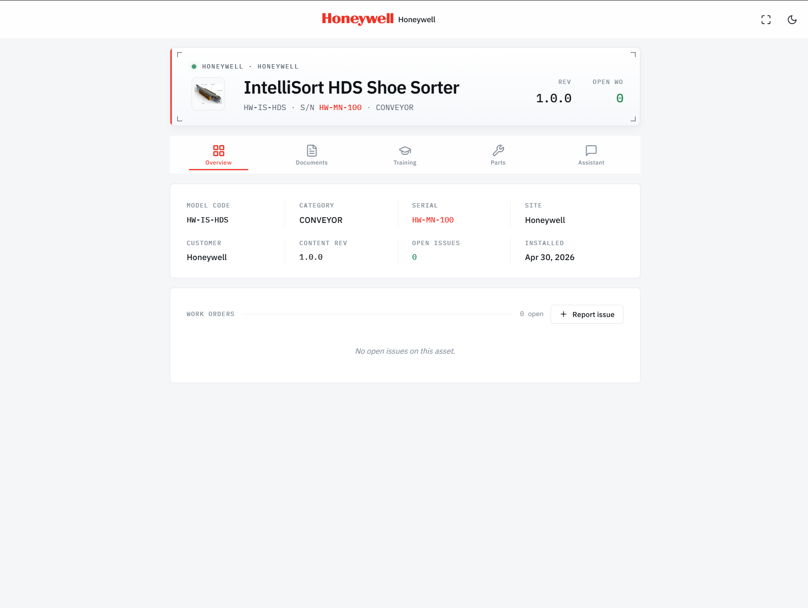
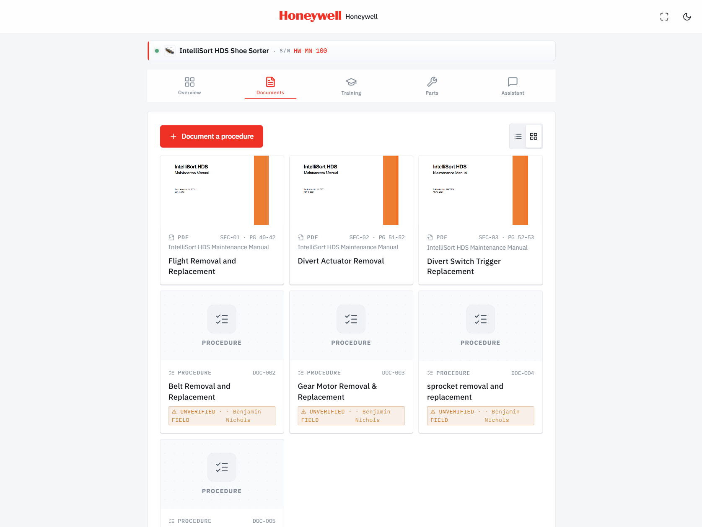
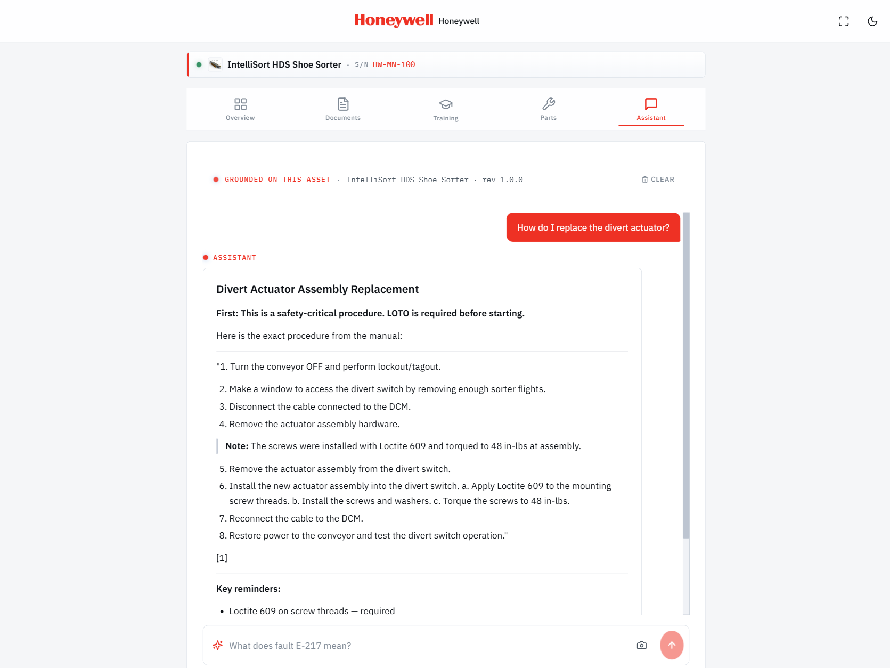
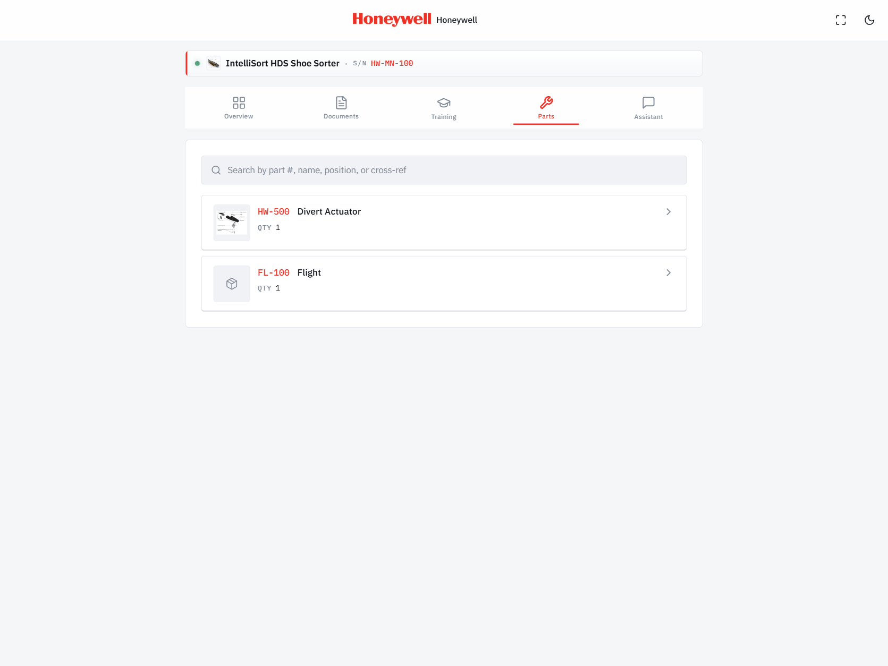
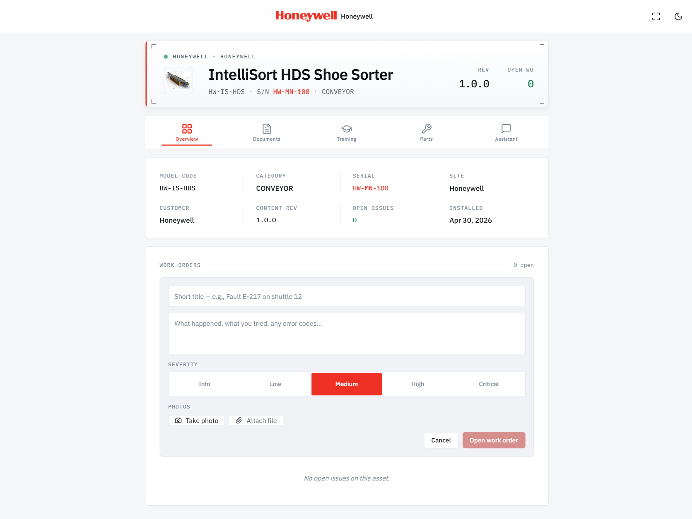
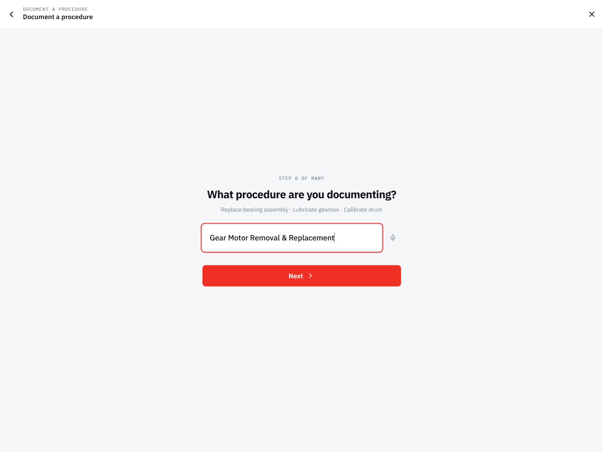
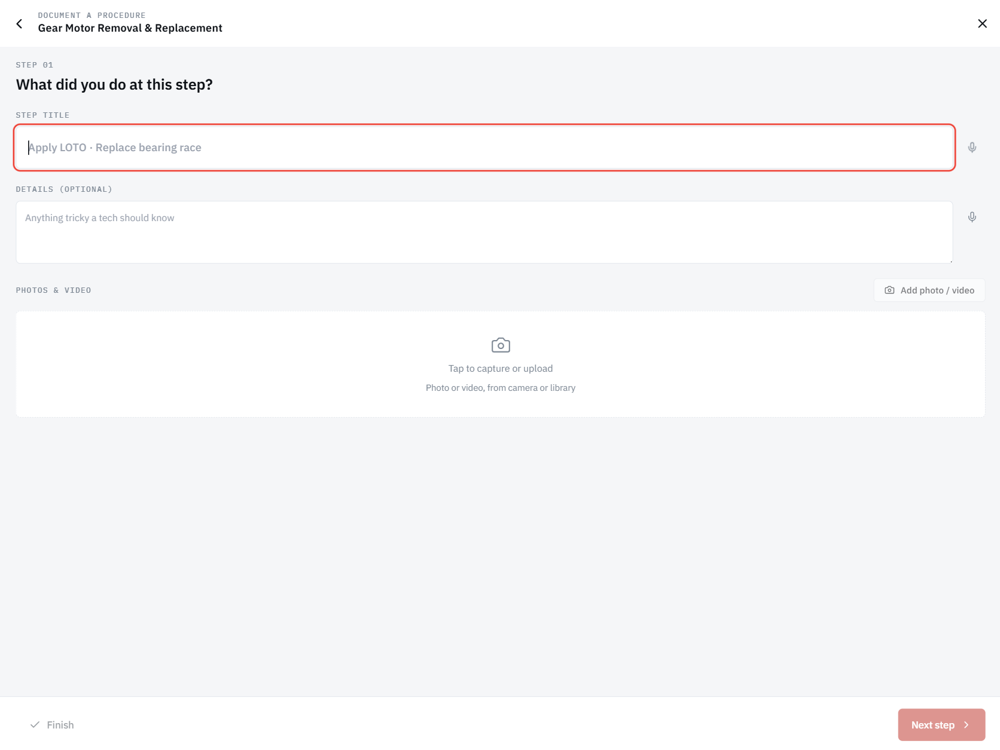

The same Connected Worker Platform — purpose-built for material handling and industrial automation — at full iPad scale. More manual on screen, more parts visible, fewer taps to fix the machine. No app to install; runs in Safari, installs to home screen, works offline for recently-viewed content.

Mount an iPad next to each major machine. Same QR scan flow, expanded canvas — the maintenance team gets a tablet-class view of the manuals, parts, and procedures they reach for every day.
Wall-mounted iPads at every major sub-system. Always charged, always available, always pointed at the equipment they cover.
Pin a wall-mounted tablet to a specific machine, or use the iPad's camera to scan QR codes on adjacent equipment. Same session model, same audit trail.
More manual on screen, parts and exploded views beside the diagram, AI assistant in a side panel. Fewer taps to do the same job — measurably faster MTTR.
Brand-aware UI shows model code, serial, content revision, customer, install date, and any open work orders — laid out across the iPad's full canvas without scrolling.
Manuals split into part-specific sections. The iPad grid view shows section thumbnails, page ranges, and unverified field-procedure overlays at a glance.

Plain-English questions, cited answers grounded on this asset's published content. Safety-critical procedures quoted verbatim. The iPad's wider chat surface makes long technical answers easy to scan.

Searchable by part number, name, position, or cross-reference. Each part links to its install procedure, exploded views, and OEM-branded ordering — re-routing aftermarket revenue back to the OEM.

Severity, photos, attachments — issues route to maintenance with the asset, scan history, and content rev attached. The iPad form keeps the asset header in view while the work-order is being filled.

Techs document procedures right at the equipment. Voice-to-title, step-by-step photo and video evidence on a tablet keyboard, time-stamped on every action. Saved as unverified drafts; admin promotes them to published content.


OEMs, integrators, and end-customers each pay for different value from the same physical asset. Mounted iPads on the floor are the end-customer's investment; the platform underneath is shared.
Brand every Honeywell sorter, every Intralox splitter, every SICK scanner with content that routes parts orders back to you — no leakage to third-party distributors.
Faster MTTR, better first-time-fix rate, and lower truck-roll frequency across your active project portfolio. Service contracts stay profitable.
Mount iPads at every major sub-system. One platform across every OEM, every integrator, every decade of installed equipment. Audit trails included.
A 12-inch canvas at every line turns documentation from a thing techs ignore into a thing they reach for. Same platform — different ergonomics, measurably better outcomes.
We're selecting five MHI integrators and OEMs for a structured 90-day beta. SANTECH authors your content, ships branded QR labels, runs weekly check-ins, and gives you founding-member pricing at day 90. Estimated value of included services: ~$25,000.
Request a beta slot